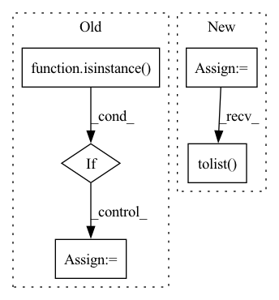

Pattern ID :25709
Before Change
name: save figure as <name>.png
all_activations = []
if isinstance( labels, str) :
activations = pd.read_csv(f"{model_dir}{directory}/{labels}_activations.csv")
// Reference for row to label
label_handle = [labels] * len(activations)
else:
// Accumulate activations & label handle
activations = []After Change
if num_null > 0 and len(temp) == len(df_class):
print(f"{label} contains {num_null} null values!")
// Filter out NAs
df_class = df_class.loc[~temp.isna().sum(axis=1).map(lambda x: x > 0)]
df_class.to_csv(class_meta_filename, index=False)
print(f"{label} updated!")
// Accumulate non-null activations
temp = temp.dropna().reset_index(drop=True)
activations.append(temp)
// Confirm activations and metadata match
if len(temp) != len(df_class):
print(kind, label, " has uneven activation - metadata")
print("Length Activations/Label Metadata: ", len(temp), len(df_class))
// Accumulate labels & absolute file paths
label_handle.extend([label] * len(temp))
file_paths.extend(df_class.apply(lambda x: x.path + "/" + x.filename, axis=1).tolist() )
activations = pd.concat(activations, ignore_index=True)
In pattern: SUPERPATTERN
Frequency: 3
Non-data size: 5
Instances Fragment ID: 77977600
Project Name: stan-hua/cytoimagenet
Commit Name: 1ab297e870800b585b527efea61b1dad69bc8ee4
Time: 2021-08-03
Author: stanley.hua@mail.utoronto.ca
File Name: scripts/visualize_classes.py
M Class Name: AnonimousClass
N Class Name: AnonimousClass
M Method Name: create_umap(3)
N Method Name: create_umap(2)
M Parent Class:
N Parent Class:
M File Name: scripts/visualize_classes.py
N File Name: scripts/visualize_classes.py
M Start Line: 142
M End Line: 160
N Start Line: 142
N End Line: 192
Before Change
results = super().__call__(documents, [query])
// Convert results to a list when documents only has a single input
if not isinstance( results[0], list) :
results = [results]
return [r[0][1] for r in results]
After Change
scores = super().__call__(texts, [query] if isinstance(query, str) else query, multiclass)
// Sort on query index id
scores = [[score for _, score in sorted(row)] for row in scores]
// Transpose axes to get a list of text scores for each query
scores = np.array(scores).T.tolist()
// Build list of (id, score) per query sorted by highest score
scores = [sorted(enumerate(row), key=lambda x: x[1], reverse=True) for row in scores]
Fragment ID: 77977598
Project Name: neuml/txtai
Commit Name: e84d7c003b02c0ec6a451130a66a3f5652f38e48
Time: 2021-01-08
Author: 561939+davidmezzetti@users.noreply.github.com
File Name: src/python/txtai/pipeline.py
M Class Name: Similarity
N Class Name: Similarity
M Method Name: __call__(4)
N Method Name: __call__(3)
M Parent Class: Labels
N Parent Class: Labels
M File Name: src/python/txtai/pipeline.py
N File Name: src/python/txtai/pipeline.py
M Start Line: 131
M End Line: 137
N Start Line: 129
N End Line: 158
Before Change
def attack(self, epoch: int, save=False, get_data="self", loss_fn=None, **kwargs):
if isinstance(get_data, str) and get_data == "self":
get_data = self.get_data
if isinstance( loss_fn, str) and loss_fn == "self":
loss_fn = self.loss_fn
self.model._train(epoch, save=save,
validate_func=self.validate_func, get_data=get_data, loss_fn=loss_fn,
save_fn=self.save, **kwargs)After Change
clean_dataset = self.dataset.loader["train"].dataset
_input, _label = next(iter(self.dataset.get_dataloader(
"train", batch_size=int(self.percent * len(clean_dataset)))))
_label = torch.ones_like(_label) * self.target_class
_label = _label.tolist()
poison_input = self.add_mark(_input)
poison_dataset = MyDataset(poison_input, _label)
dataset = torch.utils.data.ConcatDataset([clean_dataset, poison_dataset])
loader = self.dataset.get_dataloader("train", dataset=dataset) Fragment ID: 77977593
Project Name: ain-soph/trojanzoo
Commit Name: 0c55cafd1c6ebb4c9b410b79810687356f19d009
Time: 2020-11-02
Author: ain-soph@live.com
File Name: trojanzoo/attack/backdoor/badnet.py
M Class Name: BadNet
N Class Name: BadNet
M Method Name: attack(3)
N Method Name: attack(5)
M Parent Class: Attack
N Parent Class: Attack
M File Name: trojanzoo/attack/backdoor/badnet.py
N File Name: trojanzoo/attack/backdoor/badnet.py
M Start Line: 49
M End Line: 56
N Start Line: 52
N End Line: 72